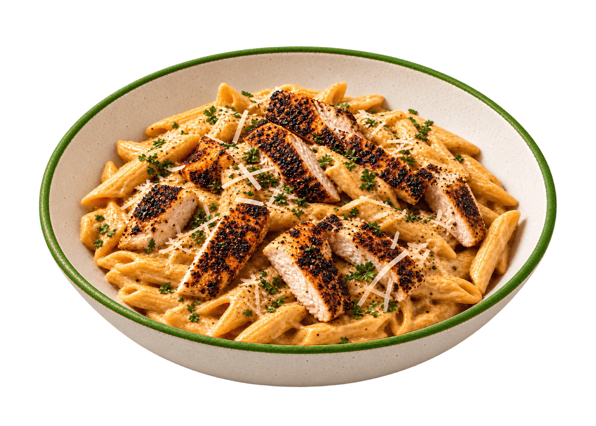

01 / Side by side
Typography comparison
02 / Curated brand board
Brand system
A FRESH TAKE ON FROZEN
Deep green / ink / paper

Our meals AboutView meals ↗
Website / headline + bodyA fresh take
A fresh take
on frozen.
Tastes like someone COOKT it.
Because someone did.

Retail / full-height signature
DTC / Blackened · heat 2/3With / without food
Communication type
Aa Bb Cc
RastaBlackenedOrzoChipotle
03 / Interactive specimens
Packaging & type specimens
Format
DTC artwork
Rasta lettering